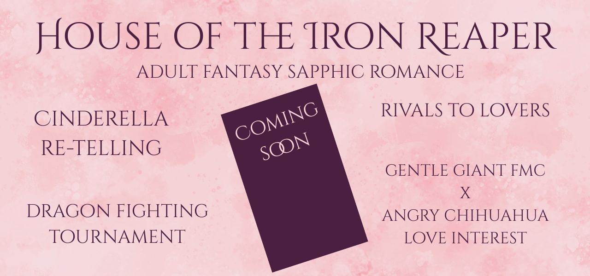

A doomed prince with a monstrous curse. A sadistic king with a dark history. And the witch who will be his reckoning.
Shivani, a talented witch, has so far avoided the annual Summoning. In her village, women are sent to the King each year and given six months to win the Prince’s heart and break his beastly curse. Anyone who can do so will be named Queen.
No one has succeeded.
Deep in debt and with the promise of a handsome reward, Shivani’s father volunteers her for the Summoning. Shivani is drugged to dull her witchcraft and taken to the castle against her will.
With no magic and no allies, Shivani attempts a desperate escape through her only window. When she falls, Prince Theo sees her in time to catch her. An unlikely friendship forms as Shivani and Theo realise they are as trapped as each other – Theo cursed to uncontrollably transform into a beast and Shivani with a six-month countdown to an execution.
When Shivani finds a long-forgotten tunnel deep in the castle, she could leave the horrors of the Summoning and the cruel King behind. But it wouldn’t save the Prince and it wouldn’t free the imprisoned servants. Or Shivani could stay – if she’s shrewd enough to decipher the curse before the executioner’s axe drops.
Wrath of the Never Queen is perfect for readers who crave a Fantasy Romance with low spice, feminine rage, and a main character who lets nothing stand in her way.

Dragons, combat, and fierce love combine in this sapphic retelling of Cinderella, set in the same magical world as Wrath of the Never Queen.
Deyanara is one of the last surviving dragons of House Iron, her lineage hanging by a thread after a tragic accident claimed her father and friends. With her House on the brink of ruin, she’s determined to work day and night to ensure its survival.
When she’s mistaken for a contender in the brutal Dragon Rites—a deadly competition where dragons battle monsters for the chance to ascend to unique power—Deyanara is drawn into a dangerous game.
But as the Rites grow more perilous and it becomes clear someone is pulling the strings behind the scenes, Deyanara must decide how far she will go to protect the ones she loves.
House of the Iron Reaper is perfect for readers who crave a sapphic fantasy romance with rivals to lovers, dragon magic, and a love that breaks the bounds of life and death.
Coming 1st September 2025.